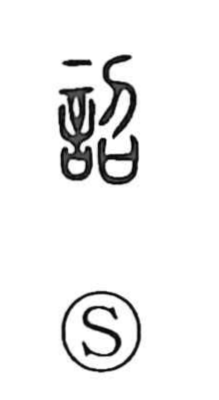

匠

Uncategorized
Kun: takumi | On: sho
craftsman ・ artisan
Explanation
In early forms, 匠 combines a box-like container that depicted the bamboo vessel 簠—a round offering basket used to present millet in ritual—with 斤, the hand-axe. It originally evoked the artisan who, axe in hand, split bamboo and timber to make such ritual baskets and to fell trees. From “maker of baskets,” the sense broadened to “maker of vessels,” and then to craftsmen in general, carrying the idea of skill and even instruction in technique. The Zhou Rites (Kao Gong Ji) records 匠人營國, “craftsmen lay out the state,” underscoring their role in planning and building the capital. In Japanese compounds like 鵜匠 and 鷹匠, the character preserves the sense of a professional craft specialist.